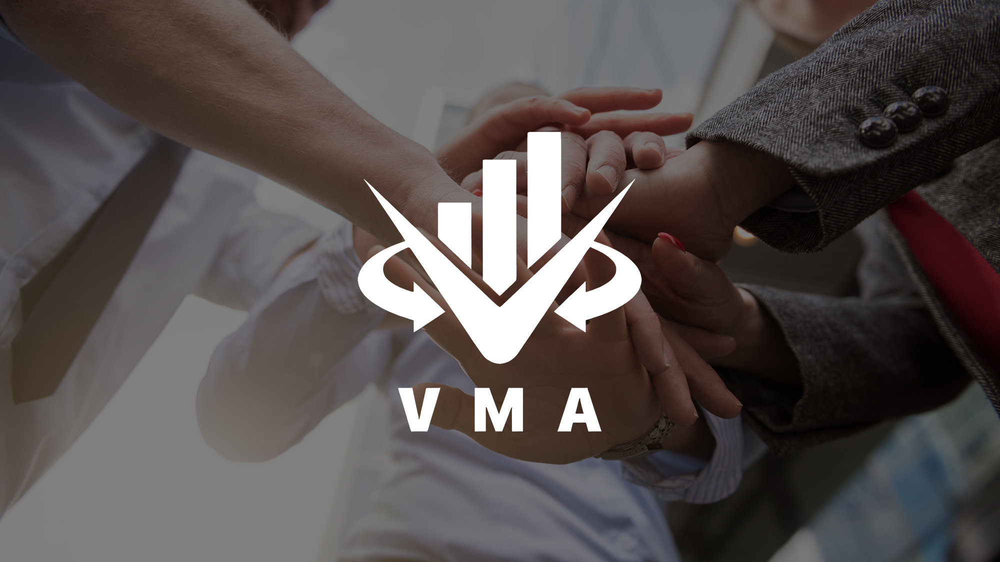
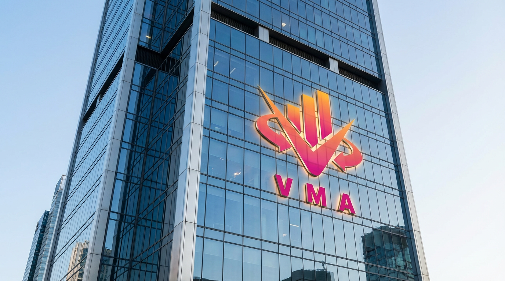

Clarity
Complex ideas are organized and explained in language that helps members see relationships, assumptions and practical meaning.
VMA Community was created around a straightforward belief: investors become more capable when quality knowledge, practical experience, thoughtful technology and responsible guidance work together.
VMA Community brings investors into an environment where questions are welcomed, information is examined in context and progress is built through continuity. Its educational direction is shaped by professionals with experience across financial analysis, investment management and industry practice, including perspectives associated with established credentials and professional organizations.
The purpose is not to create dependence on a single voice. VMA Community helps members develop the ability to understand concepts, investigate information, compare evidence and reflect on their own process. That approach turns education into a durable skill rather than a temporary response to the latest market movement.

VMA Community treats financial education as a combination of understanding, application and reflection—not as a stream of disconnected recommendations.
Complex ideas are organized and explained in language that helps members see relationships, assumptions and practical meaning.
Every tool and viewpoint is placed within a risk-aware framework that respects uncertainty and independent decision-making.
Learning is treated as an ongoing practice that develops through review, conversation and changing market experience.

VMA Community combines online and offline education to make learning more accessible without losing the value of focused human exchange.
Online learning gives members flexibility, timely material and a consistent place to revisit concepts. Offline sessions create room for deeper discussion, practical demonstrations and the kind of spontaneous questions that often reveal where understanding needs to grow. Together, the two formats create a learning rhythm that can move from explanation to application and from individual study to shared insight.
Members begin with market structure, common asset classes, financial language and the principles that make later analysis more meaningful.
Economic conditions, information, sentiment and risk are considered together so members can avoid overly simple explanations.
QuantCore AI supports research efficiency and pattern awareness while education clarifies what models can—and cannot—establish.
Practical exercises help members document assumptions, consider alternatives and evaluate decisions with greater consistency.
Outcomes are reviewed without hindsight shortcuts, creating an opportunity to refine both knowledge and behavior.
VMA Community uses QuantCore AI to help monitor market dynamics, organize data and surface patterns that deserve further study. The technology can make research more efficient, but efficiency is not the same as certainty. Educational context remains essential because data reflects assumptions, models have limits and markets can change in ways that historical patterns do not fully anticipate.
Fraud prevention and risk awareness are part of the educational mission of VMA Community.
Members are encouraged to examine sources, verify claims, understand incentives and recognize the warning signs that often appear around unrealistic promises. This focus is not based on fear. It is based on the idea that confidence should grow from process, evidence and an honest understanding of uncertainty. Stronger habits help investors protect not only capital, but also attention, judgment and long-term learning.
VMA Community continues to develop an environment where education can keep pace with technology while remaining grounded in professional standards, practical relevance and human judgment.